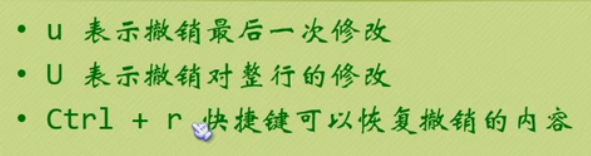

vim编辑器学习
模式：
基本模式：普通模式、插入模式、可视模式、选择模式、命令行模式、Ex模式
基本模式：普通模式、插入模式、可视模式、选择模式、命令行模式、Ex模式
vi + 文件名 ---> 打开一个文件并进入普通模式（方向键：h ---> 左 、 j ---> 右 、 l ---> 上 、 k ---> 下）
i ---> 进入插入模式（插入模式下hjkl方向控制将不起作用，见下图1其他进入方式）
Esc按键 ---> 退出插入模式
: ---> 在普通模式下进入命令行模式
:q! ---> 在普通模式下不修改退出vim编辑器
:wq ---> 在普通模式下修改退出vim编辑器
shift两次 ---> 在普通模式下修改保存退出vim编辑器
x ---> 在普通模式下删除光标选中的字或符号
-d motion ---> 删除更多字符可以使用d命令（见下图2）
i ---> 进入插入模式（插入模式下hjkl方向控制将不起作用，见下图1其他进入方式）
Esc按键 ---> 退出插入模式
: ---> 在普通模式下进入命令行模式
:q! ---> 在普通模式下不修改退出vim编辑器
:wq ---> 在普通模式下修改退出vim编辑器
shift两次 ---> 在普通模式下修改保存退出vim编辑器
x ---> 在普通模式下删除光标选中的字或符号
-d motion ---> 删除更多字符可以使用d命令（见下图2）

